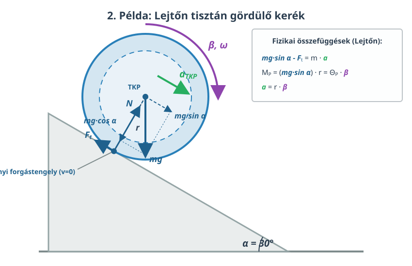

Az energia megmaradása forgómozgás esetén
A tömegközépponti tengely
Eddig láttuk, hogy a forgómozgás alapegyenlete alkalmazható rögzített tengely esetén, vagy a pillanatnyi forgástengely esetén is, amennyiben a tengely nem rögzített.
Most azt fogjuk megmutatni, hogy a tömegközépponton átmenő tengelyre is alkalmazható. Bizonyítani ezt nem fogjuk, de nézzünk meg egy példát!
Példa
Egy homogén gömb alakú golyó gördül le a -os hajlásszögű lejtőn. A gömb tehetetlenségi nyomatéka . Mekkora a gömb gyorsulása?

Ezt a problémát már megoldottuk a pillanatnyi forgástengely segítségével. Most oldjuk meg a tömegközépponton átmenő tengely segítségével is!
A nyomaték most a tapadási erőből fakad, hiszen egyedül ennek a hatásvonala nem megy át a tömegközépponti tengelyen.
Az alapegyenlet tehát ekkor a következő:
A tömegközépponthoz képest a lejtővel érintkező pont sebességének nagysága a következő:
Valójában ennek a pontnak a sebessége az inerciarendszerben nulla, hiszen a tömegközéppont halad ugyanekkora nagyságú, de ellentétes irányú sebességgel. Írhatjuk tehát, hogy:
amiből a lejtő irányú gyorsulásra azt kapjuk, hogy:
Ez ismét csak igen fontos összefüggés. A Newton-féle második törvény alakja most is ugyanaz:
Ebből kifejezve a tapadási erőt és beírva az alapegyenletbe, továbbá a szöggyorsulást az előző összefüggésből kifejezve és beírva, megkapjuk a gyorsulásra vonatkozó egyenletet:
Innen fejezzük ki -t, és meg is van az összefüggés, amit keresünk:
Ez pontosan az az összefüggés, amelyet előzőleg a pillanatnyi forgástengely alkalmazásával vezettünk le. Ide beírhatjuk a gömb tehetetlenségi nyomatékát:
Az adatokat behelyettesítve megkapjuk a gyorsulást:
A mechanikai energia megmaradása
Forgómozgás esetén is igaz az, hogy a mechanikai energia megmaradhat. Ennek viszont fontos feltétele, hogy az összes külső és belső erő konzervatív legyen. A merev testekben ható belső erők konzervatívak. Tehát ha nincs csúszási súrlódás (csak tiszta gördülés), és csak egy merev test mozog, akkor a mechanikai energia megmaradó mennyiség. A mozgási energia kiszámításakor viszont figyelembe kell venni a forgást is! Itt is vagy a pillanatnyi forgástengely körüli forgással dolgozunk, vagy a tömegközéppont körüli forgás energiájához adjuk a haladó mozgás energiáját, amelyet úgy képzelünk el, mintha a test teljes tömege a tömegközéppontba lenne egyesítve, és úgy mozgona.
Példa
A lejtőn legördülő gömb esetében mutassuk meg, hogy a mechanikai energia állandó!
Induljon a test mondjuk álló helyzetből az egyszerűség kedvéért! Ekkor a gyorsulás:
A szöggyorsulás:
Továbbá:
ahol
Helyettesítsük ezeket be!
Az első két tag összevonható:
Itt egyszerűsítés után pontosan az utolsó tag ellentettje áll, vagyis azt kapjuk, hogy:
Feladatok
1. A letekeredő henger (A jojó-probléma):
A szövegben egy lejtőn guruló testet vizsgáltunk, ahol a forgatónyomatékot a tapadási erő adta. Képzeljünk el most egy tömegű, sugarú tömör hengert (), amelynek a palástjára fonalat tekertünk. A fonál végét rögzítjük a mennyezeten, majd a hengert elengedjük, így az lefelé esik, miközben letekeredik a fonálról (mint egy jojó). Alkalmazd a szövegben látott dinamikai logikát: a tapadási erőt cseréld le a kötélerőre (), írd fel a haladó mozgás és a forgómozgás alapegyenleteit, majd határozd meg a henger lefelé irányuló gyorsulását! Hogyan aránylik ez az érték a nehézségi gyorsuláshoz ()?
A Maxwell-kerék (vagy Maxwell-tárcsa) egy klasszikus demonstrációs eszköz, amely a jojó-probléma fizikai alapelveit szemlélteti. Egy viszonylag nagy tehetetlenségi nyomatékú, vastag tengelyű kereket függesztünk fel kétoldalt egy-egy fonálra. Amikor a fonalakat feltekerjük a tengelyre és a kereket elengedjük, az látványosan, de a szabadesésnél lényegesen lassabban gyorsulva gördül lefelé [0:01:16]. A mozgás során a helyzeti energia forgási és haladó mozgási energiává alakul át. A legalsó pontot elérve a fonalak hirtelen megfeszülnek, és a tárcsa forgási energiája miatt a fonalak elkezdenek visszatekeredni a tengelyre, így a kerék szinte teljesen visszatér a kezdeti kiindulási magasságába, folyamatos periodikus oszcillációt végezve [0:01:17].
2. Különböző testek versenye:
A szövegben egy tömör gömb gyorsulását számoltuk ki. Képzeljük el, hogy a gömb helyett egy homogén, tömör henger gördül le ugyanezen a -os lejtőn! A henger tehetetlenségi nyomatéka . * Használd a szövegben levezetett általános képletet, és számítsd ki a henger gyorsulását! * Hasonlítsd össze a kapott értéket a gömb gyorsulásával ()! Melyik test ér le hamarabb a lejtő aljára, ha azonos magasságból, egyszerre indítjuk őket? A testek tömege és sugara számít-e a végeredmény szempontjából?
3. Alternatív levezetés energiamegmaradásból:
A szövegben az erőtani összefüggésekből kiindulva igazoltuk, hogy az energia állandó. Végezd el a fordított műveletet! Írd fel az energiamegmaradás törvényét két állapotra: a test induljon egy hosszúságú, hajlásszögű lejtő tetejéről álló helyzetből, majd érjen le a lejtő aljára sebességgel. Ebből az egyenletből vezesd le a test tömegközéppontjának sebességét (), majd a kinematikai képlet felhasználásával mutasd meg matematikai úton, hogy pontosan ugyanazt a gyorsulást () kapjuk, mint amit a szövegben a nyomatéki egyenlettel levezettünk!
4. A tiszta gördülés feltétele (Maximális hajlásszög):
A tiszta gördülés feltétele, hogy a test ne csússzon meg, azaz a fellépő tapadási erő () ne lépje túl a maximális tapadási súrlódási erőt (). A szövegben szereplő gyorsulásképletet és a tapadási erőt () felhasználva vezesd le, mekkora lehet a lejtő maximális hajlásszöge () egy adott tapadási súrlódási együttható esetén, hogy a tömör gömb még éppen tisztán gördüljön! (Számítsd ki ezt a maximális szöget konkrétan, ha a lejtő és a gömb közötti tapadási súrlódási együttható !)
5. Gördülés a halálkanyarban:
A szövegben bemutatott mechanikai energiamegmaradást használjuk fel egy klasszikus feladathoz! Egy homogén tömör gömb nyugalmi helyzetből, magasságból legördül egy lejtőn, majd beérkezik egy sugarú függőleges körpályába („halálkanyarba”). Határozd meg, legalább mekkora magasságból kell indítani a gömböt ahhoz, hogy a hurok legfelső pontján se essen le (azaz végig a pályán maradva tisztán gördüljön)! (Tipp: A hurok tetején a testnek kell, hogy legyen egy minimális sebessége, amit a súlytalanság állapota, azaz az feltétel határoz meg. Ne felejtsd el a hurok tetején lévő test mozgási energiájába beleszámolni a forgást is! A gömb sugarát az sugárhoz képest elhanyagolhatónak tekinthetjük: .)